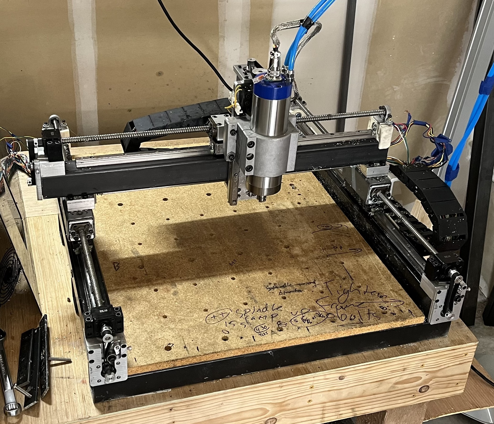
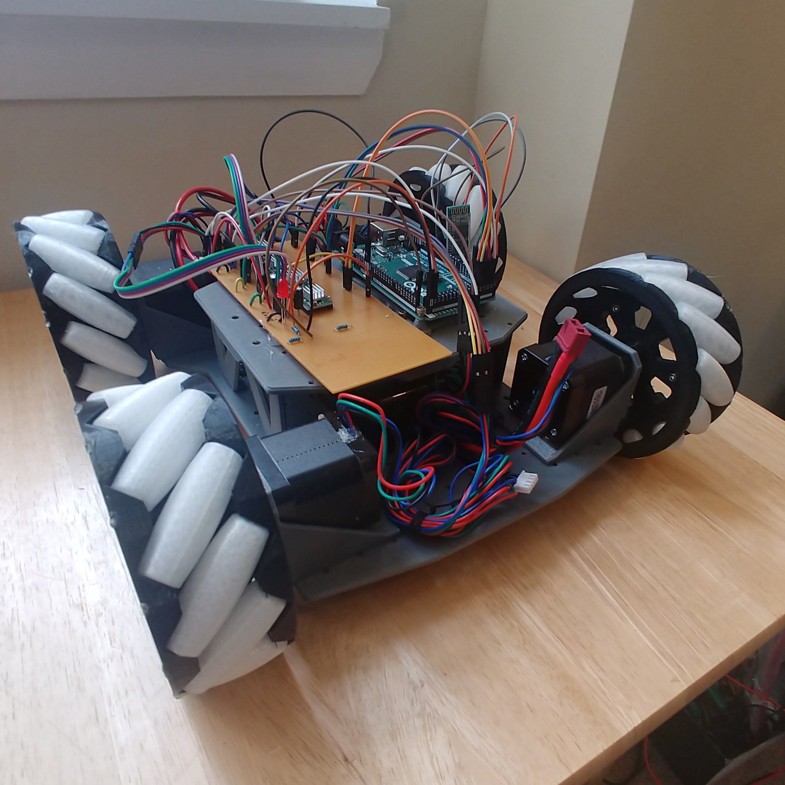

---
styles:
- styles/index.css
footer_style: styles/index-footer.css
footer_id: feeter
---
<!-- Main -->
<div class="main">

  <div class="intro">
    <h1 class=".name">Hi, I'm <span>Gaetan</span></h1>
    <h2 id="subtitle">Mechanical engineer and designer</h2>

  </div>

  <div class="printer">
    <image class="img"  src="./assets/cartoon-logo-rounded.png"> </img>
  </div>

  <a href="./projects.html" class="images">
      
      
      
      
  </a>

</div>
